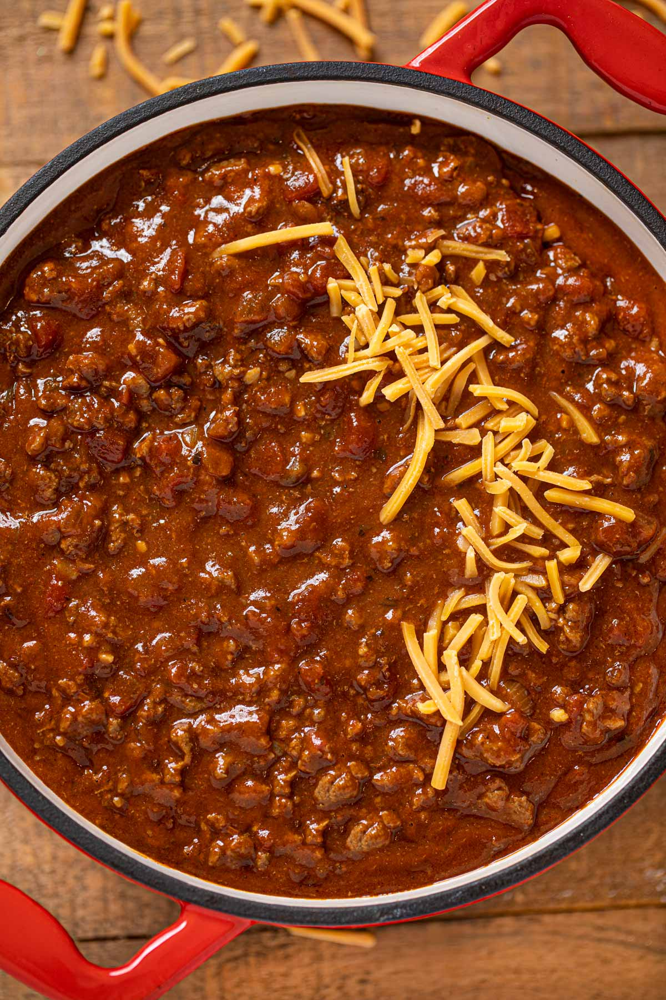

Beef Chili

A bowl of delightful, warm beef chili
Packed with nutrients and warmth is this classic Chili recipe
Ingredients:
- 2 tbsp Chili powder
- 1 tbsp salt
- 1 tbsp black pepper
- 1 tbsp garlic power
- 1 tbsp onion powder
- 1 tbsp regular or smoked paprika
- 1/8 tsp cinnamon
- 1 large onion, finely diced
- 2 poblano peppers, finely diced
- 4 cloves of garlic, minced
- 2 lbs ground beef
- 2 tbsp tomato paste
- 2 14.5 oz cans of diced tomatoes, undrained
- 24 oz can crushed tomatoes
- 2-4 cups beef broth
- 1/4 cup worcestershire sauce
Steps:
- mix all spices together and set aside
- set a heavy dutch oven over medium high heat
- add oil once hot, add diced onion and poblanos, cooking until soft (about 5 mins)
- once softened, add minced garlic and cook until aromatic (about 1 min)
- add ground beef, break up and create a single layer, and cook until there is no more pink
- once ground beef is cooked, strain fat out and set meat/veggie mixture to the side
- add tomato paste to hot pan, and cook until dark, burnt orange color (about 3 mins)
- add meat/veggie mixture back to the pan, stir until combined with tomato paste
- add cans of diced tomatoes, use juice to deglaze pan
- add crushed tomatoes, stir until combined, heat until bubbling
- add beef broth (CAUTION: only mix enough to thin out, you may not need all 4 cups)
- turn heat down to low, cover dutch oven with lid, and allow chili to simmer at least 1 hour and up to 4 hours to let flavors fully meld together
- once finished cooking, add worcestershire sauce (add more or less as desired) and stir to combine
- remove from heat and serve with sour cream, green onion, crackers, or any other toppings you wish!